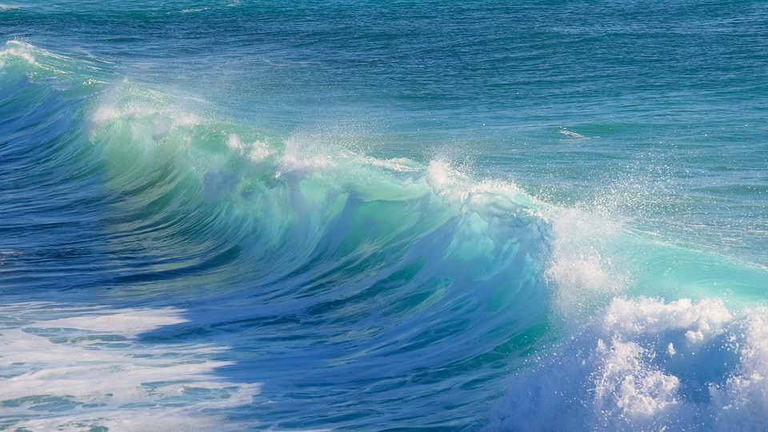

Big Wave Surfing
What Is Big Wave Surfing
Big wave surfing is a discipline within surfing in which experienced surfers paddle into, or are towed into, waves which are at least 20 feet (6.2 m) high, on surf boards known as "guns" or towboards.[1] Sizes of the board needed to successfully surf these waves vary by the size of the wave as well as the technique the surfer uses to reach the wave. A larger, longer board allows a rider to paddle fast enough to catch the wave and has the advantage of being more stable, but it also limits maneuverability and surfing speed.
The Biggest Wave In The World

- Nazaré, Portugal
- Maui, Hawaii
- Tahiti, French Polynesia
- Tasmania, Australia

The Biggest Wave In The World
In a big wave wipeout, a breaking wave can push surfers
down 20 to 50 feet (6.2 m to 15.5 m) below the surface.
Once they stop spinning around, they have to quickly regain their equilibrium and figure out which way is up. Surfers may have less than 20 seconds to get to the surface before the next wave hits them. Additionally, the water pressure at a depth of 20 to 50 feet can be strong enough to rupture one's eardrums. Strong currents and water action at those depths can also slam a surfer into a reef or the ocean floor, which can result in severe injuries or even death.[5]
One of the greatest dangers is the risk of being held underwater by two or more consecutive waves. Surviving a triple hold-down is extremely difficult, and surfers must be prepared to cope with these situations.
These hazards have killed several big-wave surfers. Some of the most notable are Mark Foo, who died surfing Mavericks on 23 December 1994; Donnie Solomon, who died exactly a year later at Waimea Bay; Todd Chesser, who died at Alligator Rock on the North Shore of Oahu on 14 February 1997; Peter Davi, who died at Ghost Trees on 4 December 2007; Sion Milosky, who died surfing Mavericks on 16 March 2011; and Kirk Passmore, who died at Alligator Rock on 12 November 2013.